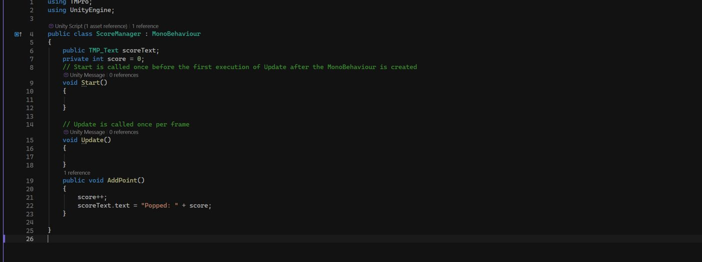
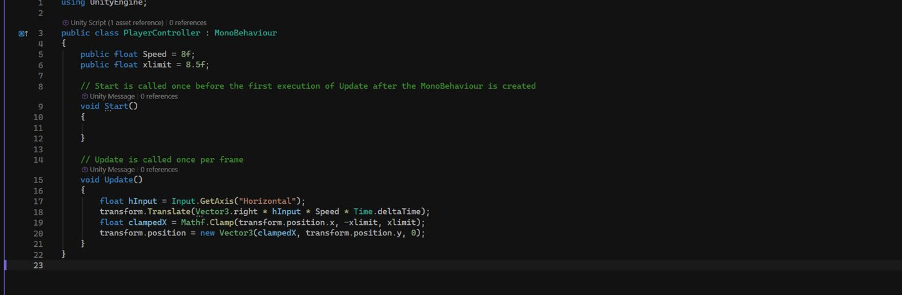
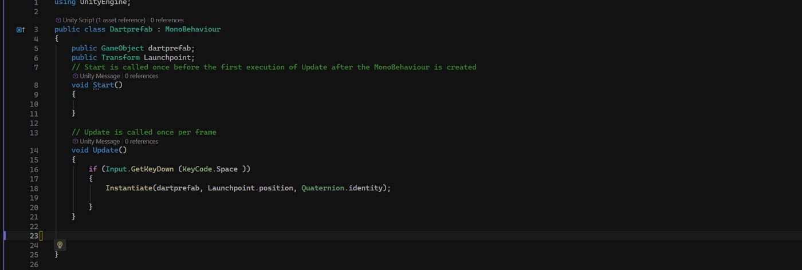
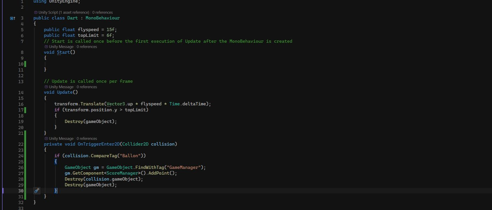
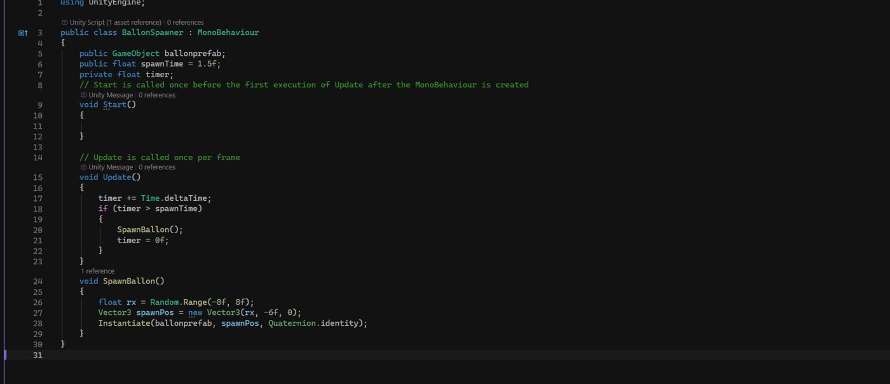
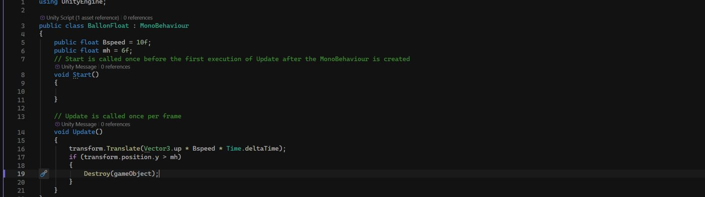

Unity games
Balloon
Balloons float up, you throw darts to pop them. The more you pop the higher the score. Simple to describe, surprisingly hard to get bug-free.
Gameplay
How it works
PlayerController moves the player left and right on the arrows or A/D, clamped to the screen. Dartprefab launches a dart on space from a launch point; Dart flies the dart upwards and handles the collision: when it hits a balloon it destroys it and calls AddPoint on the ScoreManager. BallonSpawner drops a balloon at a random x on a fixed y every 1.5 seconds, and BallonFloat makes it rise.
The first version had bugs I couldn't fix: the score manager was wired up wrong, and the trigger was on the Dartprefab script instead of the Dart itself. Coming back later I fixed both in under five minutes. If I remade it I'd fold the Dartprefab script into the player script.
Featured code
Dart.cs — fly up, pop, score
public class Dart : MonoBehaviour
{
public float flyspeed = 15f;
public float topLimit = 6f;
void Update()
{
transform.Translate(Vector2.up * flyspeed * Time.deltaTime);
if (transform.position.y > topLimit)
{
Destroy(gameObject);
}
}
private void OnTriggerEnter2D(Collider2D collision)
{
if (collision.CompareTag("Ballon"))
{
GameObject SM = GameObject.FindWithTag("ScoreManager");
SM.GetComponent<scoremanager>().AddPoint();
Destroy(collision.gameObject);
Destroy(gameObject);
}
}
}The fix that made the game work: the collision check belongs on the dart that flies, not on the launcher that spawns it.
All the scripts
6 scripts, each with what it does in my words.





